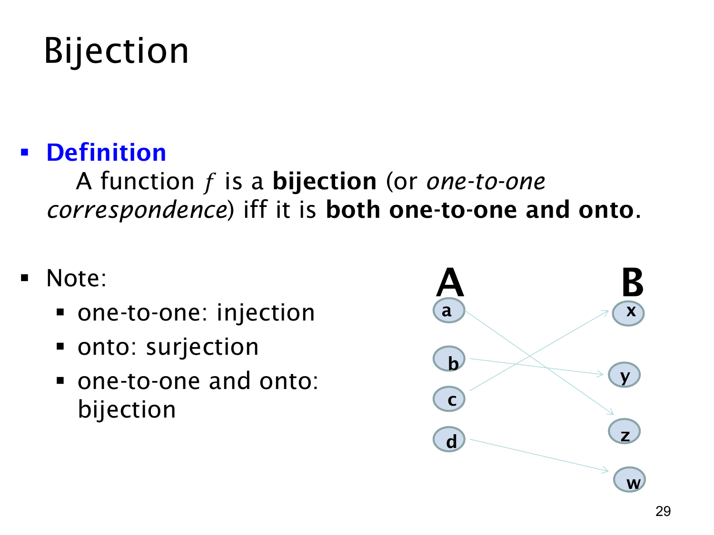

L1.4 · 第 29 页讲解原文
查看这一页课件

双射：既单射又满射
函数 f:A→B 是双射（bijection，也称 one-to-one correspondence），当且仅当它同时为单射和满射。单射保证不同的输入不会得到同一输出；满射保证 B 中每个元素都至少被某个输入命中。合起来就是：B 中每个元素恰好对应 A 中一个元素。
课件右侧的箭头图展示四个输入 a,b,c,d 与四个输出 x,y,z,w 的一一对应。每个左侧元素恰有一条输出箭头，右侧每个元素恰有一条箭头指入；所以不存在撞值，也没有遗漏目标。箭头交叉并不影响双射性质，重要的是每个端点的对应数量。
例如 f:Z→Z，f(n)=n+1 是双射：若 f(a)=f(b)，减去 1 得 a=b，所以单射；对任意 m∈Z，取 n=m−1 就有 f(n)=m，所以满射。相反，f(n)=n2 从 Z 到 Z 既不是单射，也不是满射。
课件的三个英文说法可对应记忆：one-to-one = injection（单射）；onto = surjection（满射）；one-to-one and onto = bijection（双射）。其中“one-to-one correspondence”是双射的整体名称，不要把它误写成只满足单射就足够。